优化的土唤元，，取色看评论区截图
火雕纹，火5，火3，切土|宠物2，武器2黑=切土，土5，土3，土2，土姿态=武器2黑=切火，火5，火3，火2，土姿态=武器2黑=切水，水3，水2，土姿态=武器2黑=切电，电2，电5，无充能=回春复苏，狐狸怒火，净化烈焰，火焰纹章，大地纹章，蟾蜍坚韧，火雕纹|彩子弹，宠物1，烈焰轰炸|
火雕纹,0,1000|火5,5,830|火3,3,670|切土,f4,150,5,600|宠物2,f5,330|武器2黑|土5,5,830|土3,3,440|土2,2,520|土姿态|切火,f1,150,5,830|火2,2,520|切水,f2,150,3,520|水3,3,520|水2,2,1000|切电,f3,150,2,430|电2,2,430|电5,5,440|无充能|回春复苏,6,660|狐狸怒火,7,660|净化烈焰,8,1|火焰纹章,9,520|大地纹章,8,520|蟾蜍坚韧,7,550|彩子弹,1,1|宠物1,f5,1|烈焰轰炸,0,1
[&DQYfJRomUCliHWIdch3LAJEAjwDLAHcdJgCWAAAAAAAAAAAAAAAAAAAAAAAENgBnAFYAMQAA]
有大佬有更好的优化，辛苦发一份
火协调起手，全局0.9这个根据自己的需求调
武器手枪、号角；法印渴求、痛苦；装备全毒蛇或全开拓；符文陷阱师；碎层古物
可以刷满 30S敏
F技能用多点取色
无充能取F5黑
彩子弹取4种子弹都有的时候1技能，这玩意看运气放
0灌 普通扳手/食物 全毒蛇套
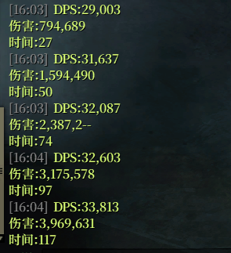
0灌 普通扳手/食物 全开拓套
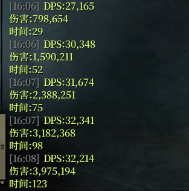
打厄拉挑传奇厄拉菲薄挑 可以点这个 几乎不掉伤害，肉的雅痞
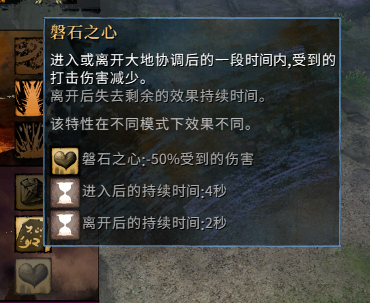
评论列表（53）
啥也没动，突然0灌快35K了
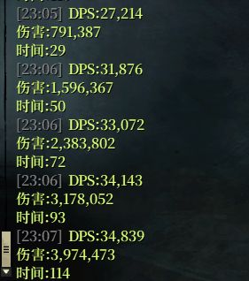
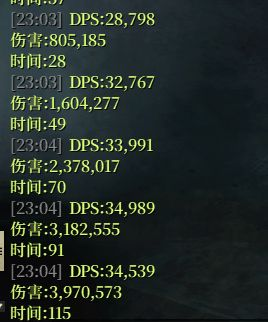
不知道哪里的问题 最多只能打30
@amy 打一会切协调顺序会乱 不按火土水电
为什么刷不满敏捷呀
我也一样，楞是不切雷和水，手动切雷和水放完技能又会自动跳土。全方位各种取色都不行
@残灯孤影忆潇湘 但是我在循环里面加个 火切雷，雷切水，又能自动切雷和水。。EMM。
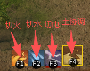
@纸
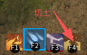
@纸
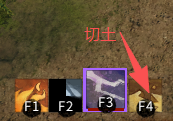
@纸
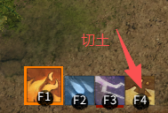
@纸 这三种切土都行
@纸 全部用多点取色
@纸 原本整了几天一直觉得是循环问题，这一重新一整全由问题
@1480636595 删除整个循环 重建一个 重新取色
@纸 我就刚重新整的
@1480636595
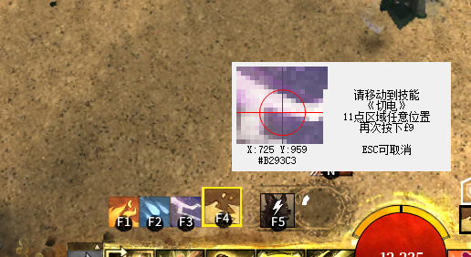
@1480636595
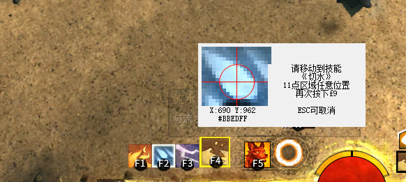
@1480636595
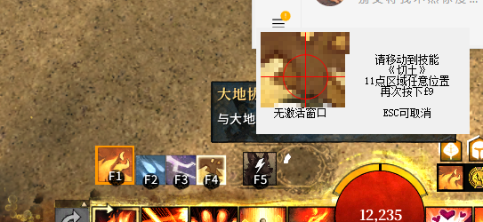
@1480636595
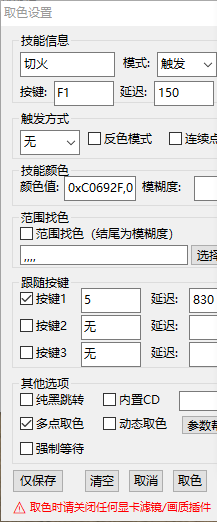
@1480636595
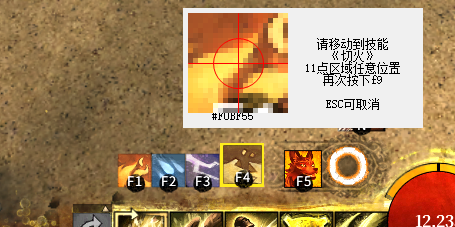
@1480636595 哥们，你包用滤镜了
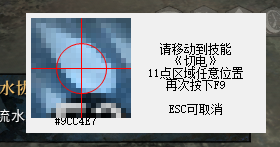
@纸
@纸
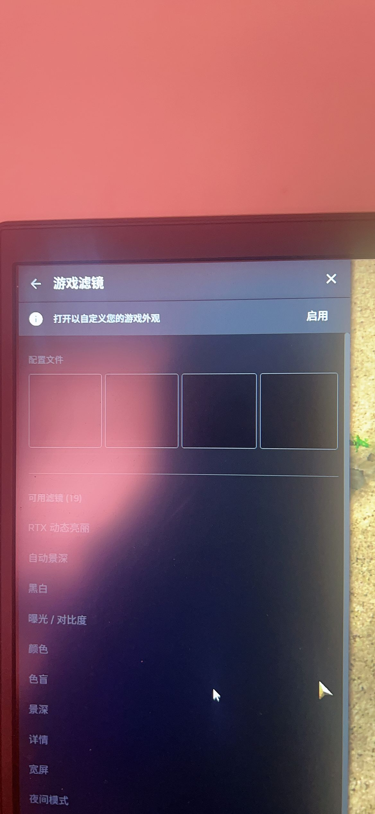
@1480636595 那就没办法了，取色真不难，还有就是用这个，就不能用滤镜啥的，包括电脑的、插件的都不能用
@纸 真没有
@纸 之前按照那些麻烦的办法，可以循环，但是只能循环切元素的前俩个循环，第三个就不行，就是切火切雷不切水，切火切水不切雷，切雷切水不切火
@1480636595 你的色值开了调色，根本就不对
@1480636595 你对比，我给你截图的水协调取色，我的是完全没有任何的，色值差那么多
有没有大佬会教教，不是不出电，要不就不出水，要不俩都不出研究麻了，求大佬指点一下
我设置雷优先，水又不出来
@qq1480636595 那就是你水取色不对，水绝对没问题
@流沙 我都按照说的来的
@流沙 我老认真了，研究了快几个小时了
@流沙 大哥能不能给个联系方式帮我看看
@qq1480636595 那就是你水取色不对，水绝对没问题
空气（紫色）协调，不切换的原因是：水协调的2，3技能需要读条，占用了时间，打完再切的话，只能是在火、土、水之间切换，将土姿态=武器2黑=切电，电2，电5，提前，主要是电2施放时间非常快，2黑识别也就非常快，空气（紫色）协调的识别也就很快了。
空气（紫色）协调，取色一定要做F3的右侧或者左测，靠近角落的地方，我是在右侧取色的。如果这样去色依然不行，将土姿态=武器2黑=切电，电2，电5，这个序列的优先级提前，放到水协调前面，不会应先输出，并且可以完美切换，我测试了好长时间，没有问题。
空气（紫色）协调，取色一定要做F3的右侧或者左测，靠近角落的地方，我是在右侧取色的。如果这样去色依然不行，将土姿态=武器2黑=切电，这个序列的优先级提前，放到水协调前面，不会应先输出，并且可以完美切换，我测试了好长时间，没有问题。
水协调取色中间的水滴白色部分即可，重点是电协调，一定要取F3左边的紫色位置，且必须的多点取色，不然不切，亲测有效。
@流沙 老哥我按照你说的还是不行，可以帮我看一下吗
@qq1480636595 看我上面的评论
老是卡姿态，一直卡在水或是不切雷求教学为啥
@qq1480636595 卡水不应该，卡雷确实存在，取色不好取，雷协调偶尔才能跳一次，不管怎么取色也是这样，你就把火土、水土打好就行，输出敏捷都还可以
@121212 可以加个qq我录个视频帮我看一下吗
@121212 研究半天了老是有地方不对
@qq1480636595 我取色也不行，电切不出来，水就取中间白色水滴就行，一定要多重取色
不能切电，所以偶尔会断敏捷，可能是去色的原因。总体很棒
@流沙 用多点取色+截图
@纸 好的好的
为什么不会切水和电呀？只在火土里面切
@11 用多点取色+截图
@纸 我也不行
@纸 能加个好友不